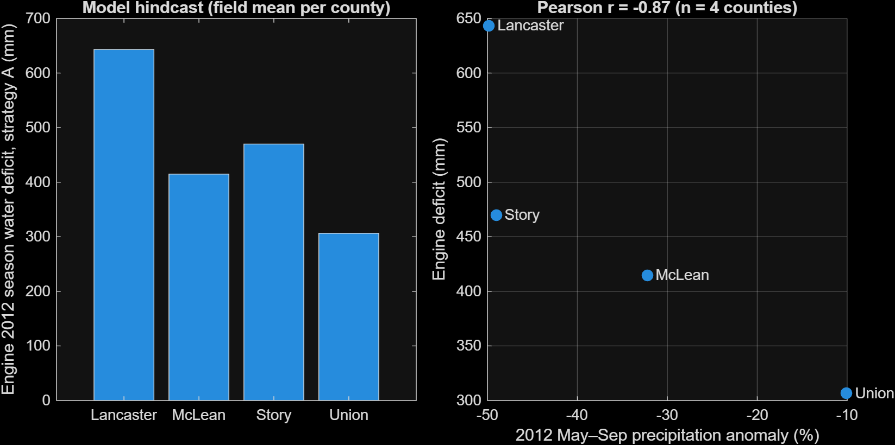
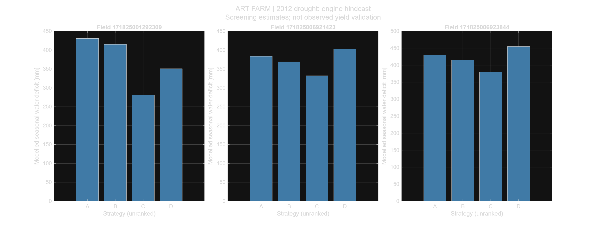
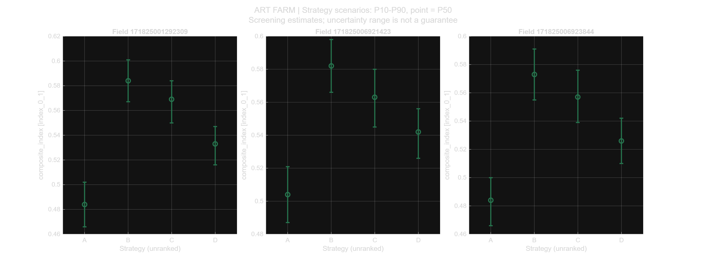

MATLAB은 라이브 요청 경로에 없습니다. 아래 파일은 팀 MATLAB 담당이 서버에서 만든 오프라인 산출물(/data/processed/v1/matlab/outputs/, 2026-11-15)의 사본입니다. 해석과 한계는 MATLAB-VALIDATION.md를 따릅니다: V8 물 요구량(ETm)과 엔진 계절 물 부족량은 정의가 달라 not validated이고, 2012 카운티 비교는 같은 NASA POWER 자료의 교차 확인이지 독립 관측 검증이 아닙니다.

matlab/drought_compare_2012.m). 요약 표: drought_compare_2012_summary.csv (4개 카운티; 상관계수는 n=4라 참고용).
matlab/slide_figures.m, 엔진 API 응답을 그림으로 옮김).
matlab/slide_figures.m). 기준 A 대비 상대 지수, 보장 아님.matlab/ndvi_baresoil.m). 관측 범위(coverage) 열을 함께 볼 것.matlab/FieldShift_V8_batch.m). 라벨 “screening estimate”, 계수는 원본 V8 값(not validated).